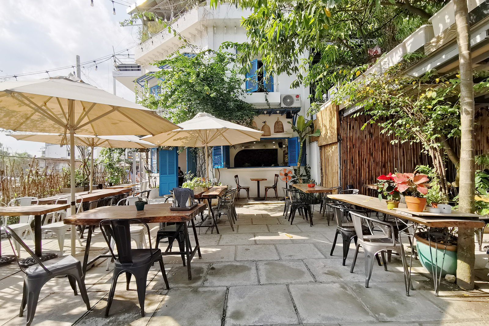
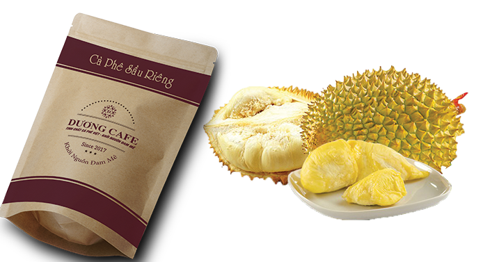
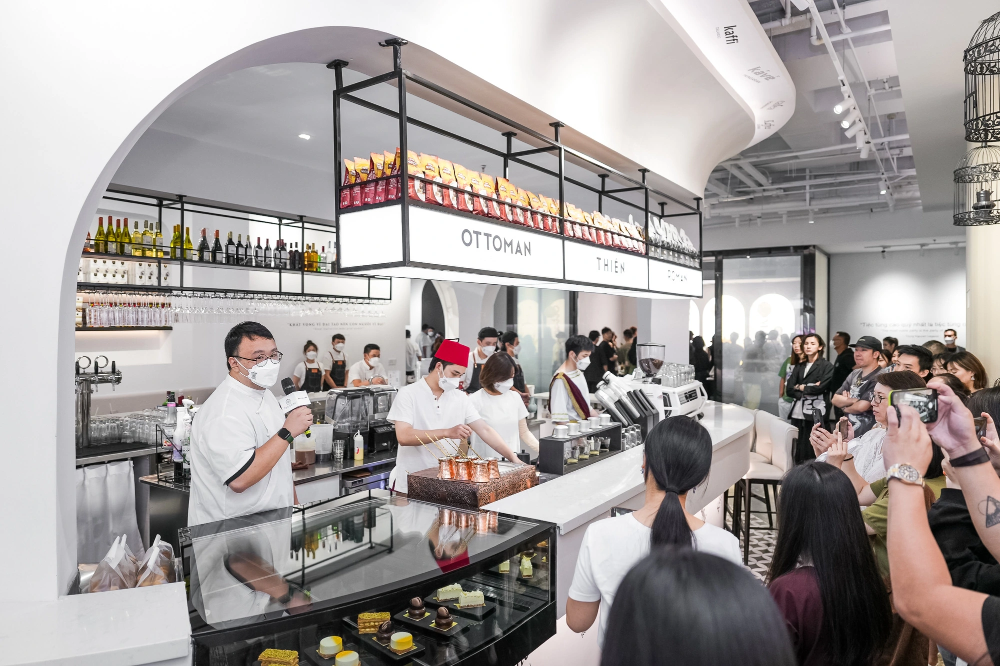

Top 5 quán chè sầu riêng Đà Nẵng thơm ngon được nhiều bạn trẻ yêu thích
AlongWalker 100 triệu năm trước công nguyên
Cà phê sầu riêng hòa tan chất lượng nhất hiện nay
All Top 6 năm trước

Cà phê vị Sầu riêng được đánh giá mấy điểm
Dương Cafe 6 giờ

Trung Nguyên Legend khai trương quán cà phê đầu tiên tại Mỹ
Tuổi trẻ online 13 giờ
12 cách pha cà phê ngon phổ biến dành cho ai muốn mở quán cafe
Zing 9 giờ